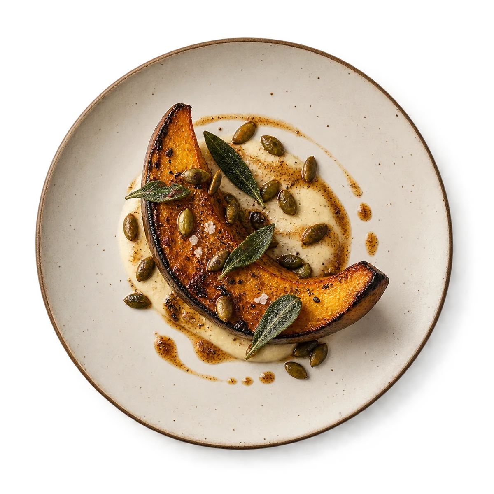
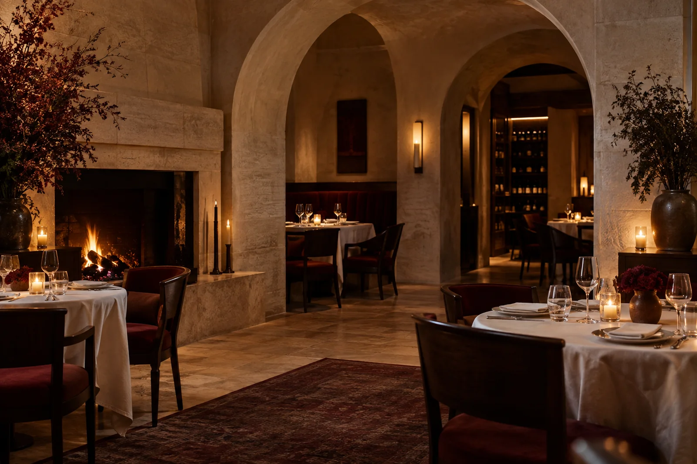
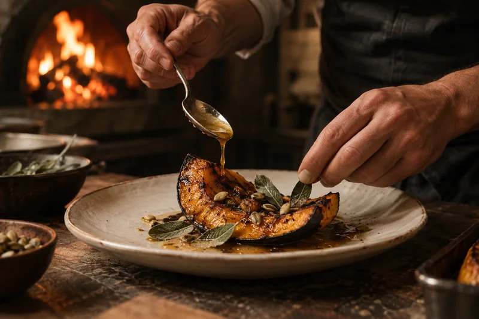
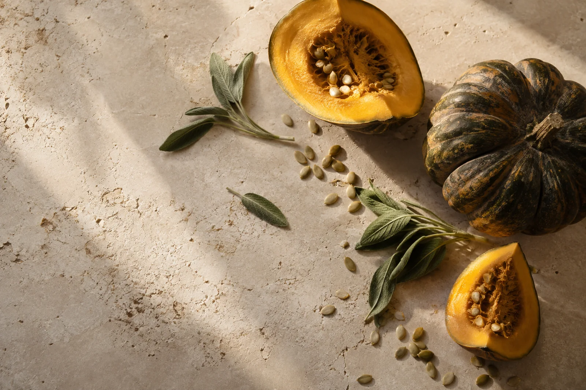
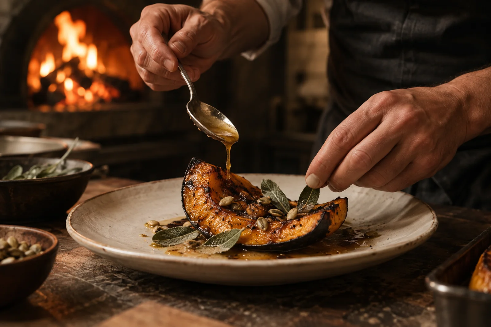
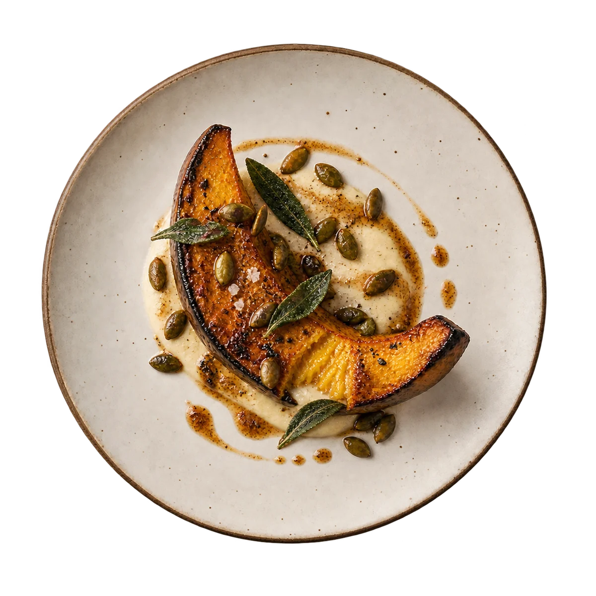
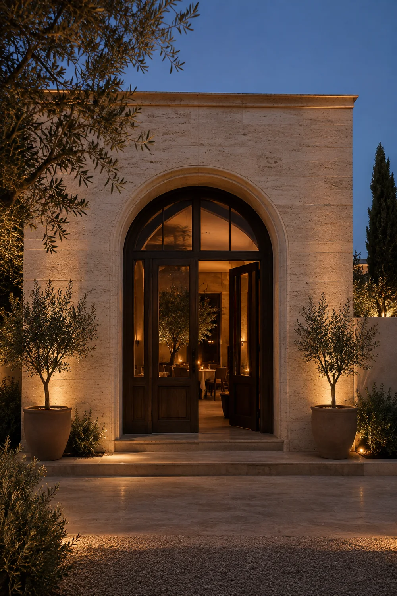

01 — CONCEPT DISH
Ember squash
Brown butter. Toasted seeds. Crisp sage.
A golden wedge, kissed by fire. Creamy, crisp and gently sweet.

FROM THE FIRESTAY A LITTLE LONGER

Some evenings deserve
a little more time.
AUREL imagines a restaurant shaped around a simple pleasure: food from the fire, passed around a table.
A contemporary, ingredient-led concept. Rooted in warmth. Made for company.

Earth. Fire. A little patience.
The imagined menu follows the ingredient.


A MOMENT IN THE IMAGINED KITCHENLet the fire do its work.
Charred at the edges. Soft at the centre.
A study in texture, warmth and balance.
Move, drag or use the arrow keys.
Press Escape to close.

THE TENDER CENTREBrown butter. Toasted seeds. Crisp sage.
SCROLL TO EXPLORE · OR CHOOSE A DISHGood food. Good company.
The kind of time you don't count.
AUREL is an independent portfolio concept, not an operating restaurant. Its rooms, dishes and atmosphere are imagined.
